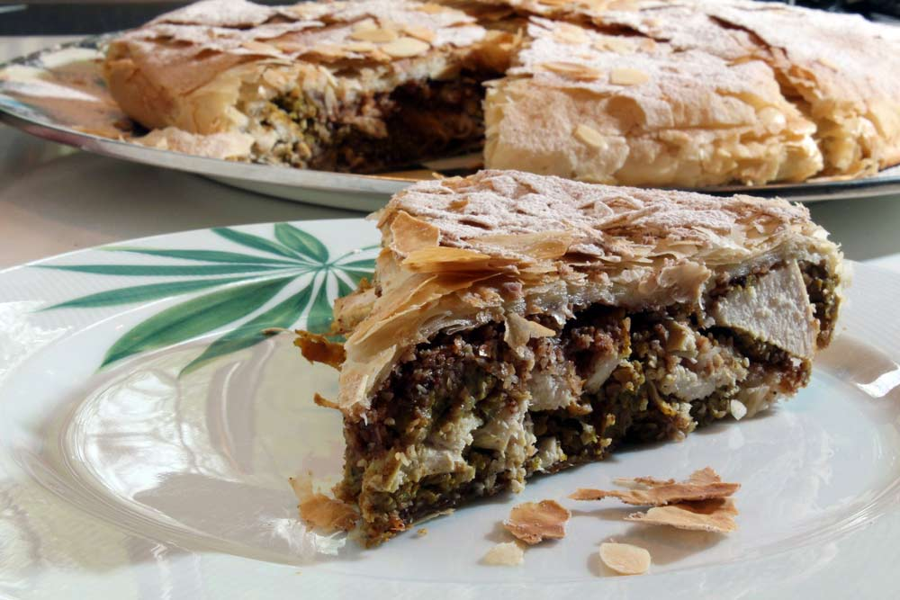

Moroccan Chicken Bastilla

Description
Chicken bastilla is Morocco's famous chicken pie.
A light, crispy warqa pastry shell conceals savory saffron chicken, spicy omelet stuffing, and a crunchy topping of fried almonds sweetened with orange flower water. A garnish of powdered sugar and cinnamon adds to the unique blend of flavors.
Ingredients
For the Chicken
- 1 (5-pound) chicken
- 1/4 cup olive oil
- 1/4 cup unsalted butter
- 2 large sweet onions, coarsely chopped
- 1 tablespoon ground ginger
- 2 teaspoons salt
- 1 1/2 teaspoons freshly ground white pepper
- 1 teaspoon freshly ground black pepper
- 1 teaspoon ground turmeric
- 1 teaspoon crumbled saffron threads
- 2 to 3 sticks cinnamon
For the Egg Stuffing
- 1/4 cup coarsely chopped fresh cilantro
- 8 large eggs, beaten
For the Almond Topping
- 1/4 cup vegetable oil
- 2 cups whole blanched almonds
- 1/2 cup confectioners' sugar
- 2 tablespoons orange flower water
- 1 tablespoon unsalted butter, softened
For the Dough
- Vegetable oil, as needed
- 1/2 cup unsalted butter, melted
- 1 pound warqa, or phyllo dough
- 1 large egg yolk, beaten
Steps